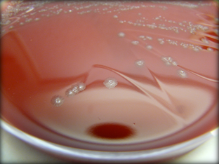

Infección por Clostridioides difficile
C. difficile es una bacteria capaz de producir toxinas que dañan el intestino y causar cuadros que van desde diarrea leve hasta colitis grave. Es una causa frecuente de diarrea asociada a antibióticos y puede afectar tanto a personas hospitalizadas como a personas en la comunidad.
Transmisión
Se transmite por vía fecal-oral, a través del contacto con personas infectadas o superficies contaminadas. Sus esporas son muy resistentes y pueden persistir en el entorno.
Mecanismo de enfermedad
Cuando la microbiota intestinal se altera —por ejemplo, tras el uso de antibióticos— la bacteria puede proliferar y liberar toxinas que inflaman y lesionan la mucosa intestinal. En casos graves puede producir pseudomembranas, megacolon tóxico o enfermedad fulminante.
Infección recurrente
Entre un 15% y un 40% de los pacientes pueden sufrir recurrencias. Estas recaídas aumentan el malestar, la estancia hospitalaria y el riesgo de nuevas complicaciones. Para estos casos, el Trasplante de Microbiota Fecal es el tratamiento más eficaz.
Infección por Clostridioides difficile
Transmisión
- Vía fecal-oral
- Superficies contaminadas por esporas
Síntomas y complicaciones
Infección recurrente
- Recaídas en el 15-40 % de los pacientes
- Mayor dificultad de tratamiento
Más complicaciones y más días de hospitalización
